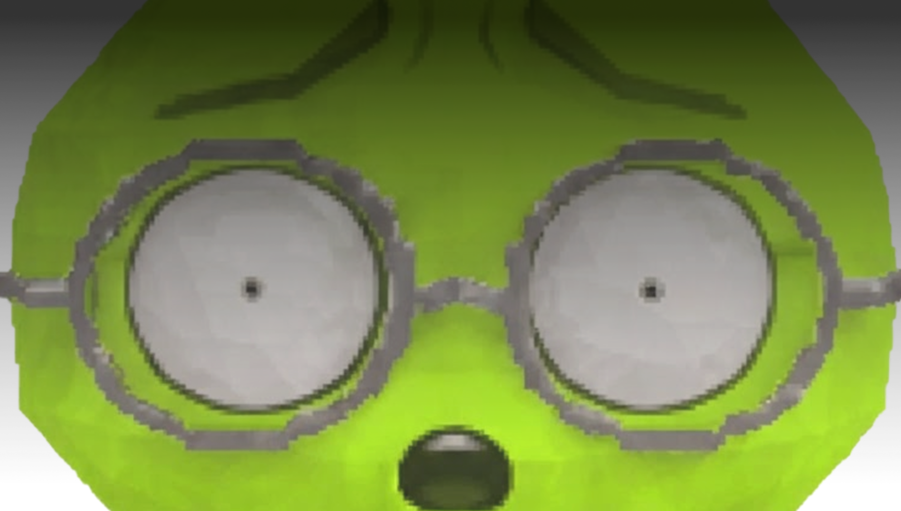
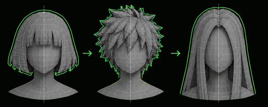
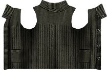
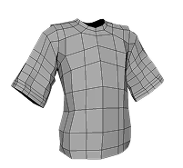
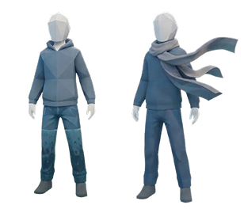

Escribí el nombre de tu NPC

¿ESTÁS SEGURO?
Todo avance será eliminado!
Selección de aspecto
Modificá tu apariencia
Selecciona un peinado
¿Sabías que...?
El 80%
de los NPC secundarios
usan cabello corto
Un 63%
de desarrolladores utilizan herramientas de IA específicamente para la creación de activos 3D y modelos de personajes
Distintos estilo de pelo modificanla silueta de la cabeza, aunque el rostro y cuerpo sean iguales.

Modificá tu apariencia
Selecciona un atuendo
¿Sabías que...?
Un 70%
de tiempo es ahorrado utilizando herramientas automáticas como Audio2Face para sincronizar el rostro, la boca y el cabello con la voz.
La ropa por capas se adapta a la forma del cuerpo y puede acompañar sus movimientos.


2D
3D

En videojuegos de mundo abierto, se combinan cientos de prendas para que nunca haya dos NPCs vestidos igual.
Modificá tu personalidad
Predominio de la cortesía
Resultados
Nombre
Tu personalidad
Cómo te expresas
Sentidos de “usuario”
Resultados
Nombre
Tu NPC está listo
Nombre
Personalidad
Cómo se expresa
Movimiento
Conciencia

Llevate a tu NPC
Escaneá el código para guardarlo en tu celular y compartirlo.